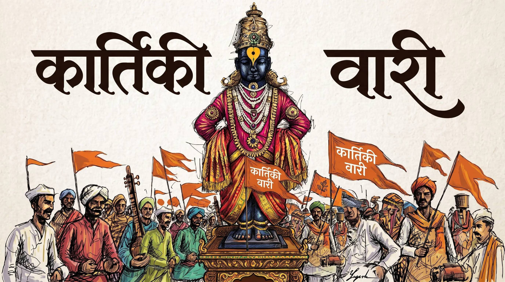
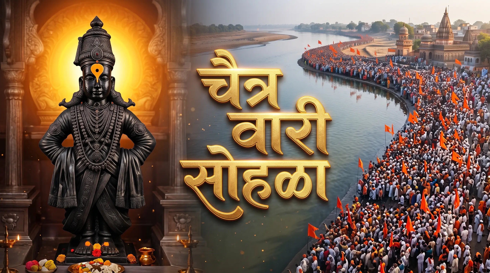
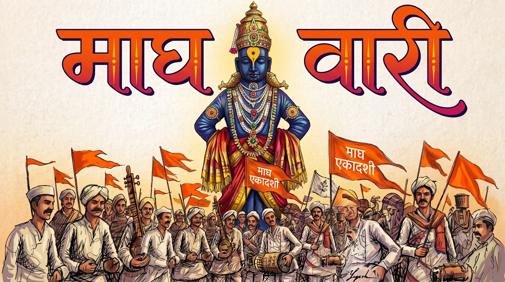
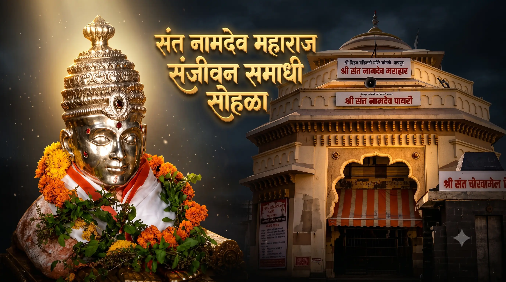
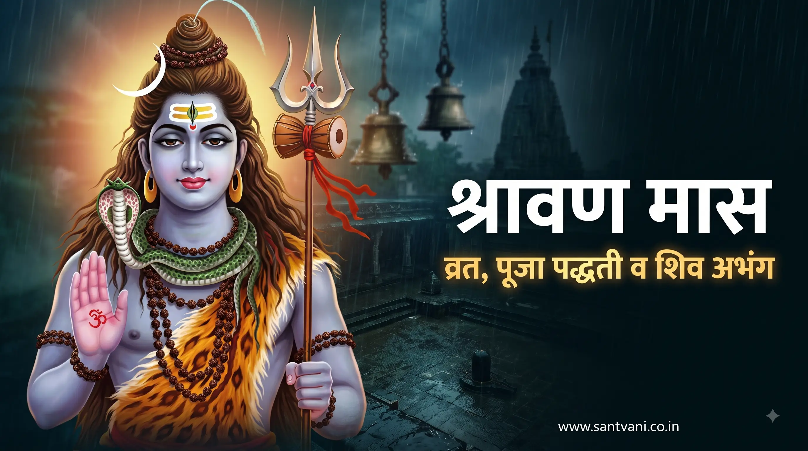

प्रमुख सोहळे आणि भक्ती उत्सव
वारकरी संप्रदायातील सर्वात महत्त्वाचे पालखी सोहळे आणि वर्षातील मुख्य धार्मिक उत्सवांची विस्तृत माहिती खालील विभागांतून मिळवा.
आषाढी एकादशी वारी सोहळा
संत ज्ञानेश्वर माऊली आणि जगद्गुरु तुकाराम महाराज यांच्या पालख्यांचे पंढरपूरकडे प्रस्थान, रिंगण सोहळा आणि आषाढी महाएकादशीचे विशेष महात्म्य.
पुढे वाचा
कार्तिकी एकादशी सोहळा
कार्तिकी समयी भरणारी पंढरीची भव्य वारी. संत नामदेव महाराज आणि इतर संतांच्या चरित्राशी जोडलेला हा पावन भक्ती सोहळा आणि त्याची परंपरा.
पुढे वाचा
संजीवन समाधी सोहळा - आळंदी
माऊली ज्ञानेश्वर महाराजांच्या संजीवन समाधी दिनानिमित्त आळंदी कार्तिकी एकादशी दरम्यान भरणारा भव्य सोहळा आणि त्यामागील इतिहास.
पुढे वाचाजगद्गुरु तुकाराम महाराज बीज
देहू धाम येथे साजरा होणारा तुकाराम महाराज वैकुंठगमन सोहळा आणि वारकरी संप्रदायासाठी या दिवसाचे असलेले अनन्यसाधारण महत्त्व.
पुढे वाचा
चैत्री एकादशी वारी सोहळा
नवीन हिंदू वर्षातील पहिली मोठी वारी. उन्हाळ्याच्या सुरुवातीला पंढरपूर नगरीत विठ्ठल दर्शनासाठी जमणाऱ्या भाविकांची चैत्र यात्रा.
पुढे वाचा
माघ एकादशी यात्रा उत्सव
पंढरपूर येथील चार मुख्य वाऱ्यांपैकी एक महत्त्वाची वारी. हिवाळ्याच्या दिवसांत भरणारी ही माघ यात्रा आणि तिचे आध्यात्मिक फलश्रुती.
पुढे वाचा
संत नामदेव समाधी सोहळा
संतश्रेष्ठ नामदेव महाराजांचा पंढरपूर येथील नामदेव पायरी संजीवन समाधी सोहळा, इतिहास आणि वारकरी परंपरेतील महत्त्व.
पुढे वाचा
श्रावण महिना: व्रत, पूजा पद्धती व शिव भक्ती
श्रावणी सोमवार व्रत कथा, शिव पूजनाची सोपी पद्धत, उपवासाचे नियम आणि संतांचे प्रसिद्ध शिव अभंग एकाच ठिकाणी.
संपूर्ण माहिती वाचा